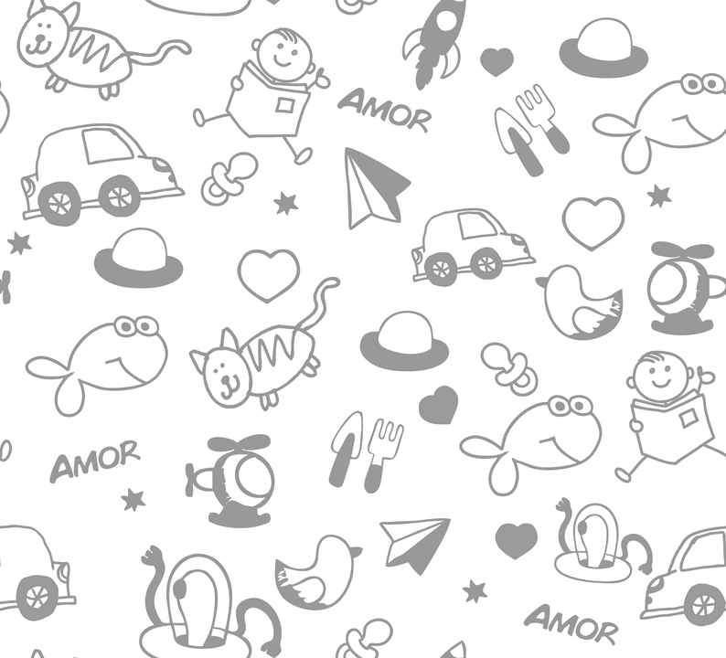
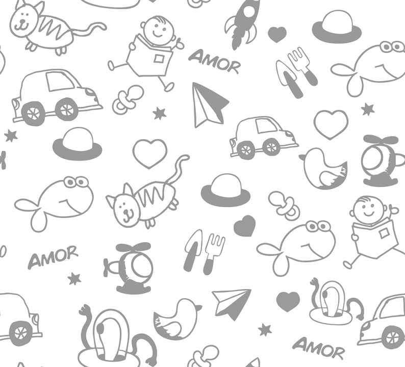

ERRADICACION DE LAS CLASES SOCIALES INFERIORES EN EL PAIS
La jerarquizacion de las clases sociales en Colombia se basa en la idea del progreso y el avance, pero esto a su vez genera que los categorizados en las clases mas bajas puedan resagarce a la hora de potenciar el progreso del de potenciar el progreso del pais.